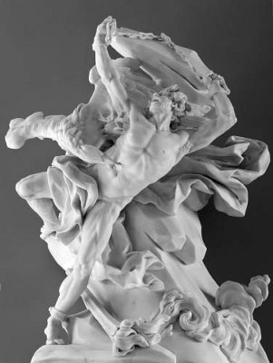

Olimpos Tanrılar Ülkesi'nde oturan Baştanrı Zeus'un bir süredir canı iyiden iyiye sıkılmaya başladı. Bu arada dünyadaki ölümlüler de tanrıları unutmuşa benziyorlardı. Zeus, oğlu haberci tanrı Hermes'i çağırdı yanına: "Oğlum; şu dünyaya bir şeyler oluyor gene... Biliyor musun, bu inatçı dünyalılar bizleri unutmuşa benziyor... Bizim için kurban filan da kesmez oldular. Hele bir gidip görelim onları..." dedi.
Hemen sırtlarına yırtık pırtık giysiler geçirip Ege kıyılarında bir sahile indiler. Yürüye yürüye, Bergama ovasına geldiler. Bir ara Zeus; "Hermes oğlum, iyi ki şu dünya elimizin altında! Buralar bizim Olimpos'tan da güzel değil mi?" diye söze başladı. "Bak buraları görünce yukarıdaki tanrıların tanrıçaların dırdırlarını, hiç doymayan tutkularını da unutuverdim. Zaten Prometeus da, Hefaystos da; insanları çamurdan şekillendirirken onlara her türlü yeteneği bağışlamışlar... Sırf onların biz tanrılardan hiçbir şey beklememeleri için!.. Bu duruma gerçi ilk başlarda çok öfkelenmiştim. Hatta bu yüzden Prometeus'a neler çektirdim, neler!.. Ama şimdi anlıyorum; doğrusu iyi etmişler..."
Hermes'in kolundan tutup; "Hele gel de şu insanlarla biraz sohbet edelim!.." dedi. "Çok iyi olur," diye onayladı haberci tanrı Hermes. "Zaten çok da acıktım! Sofralarında yer içer, biraz da laflarız..."
Hermes hep büyük kapılı, kocaman kilitli zengin evlerinin kapısını çalmaya başladı. Ne var ki kapılar ya hiç açılmıyor ya da açılır açılmaz yüzlerine kapanıyordu hemen! "Biz açız, yolcuyuz, yabancıyız!" deseler de değişen bir şey olmuyordu... Bunun üzerine kızmaya başlayan Zeus da önüne çıkan her kapıyı çalmaya başladı. Kapıyı açanlar, onların yoksul kişiler olduğunu görünce aniden kapıyı yüzlerine kapatıveriyorlardı!.. "Bunda bir yanlışlık var!" diye söylenmeye başladı Zeus. Artık Zeus'la Hermes, rastgele Bergama tepesine doğru tırmanmaya başladılar.
Tanrı Hermes küçücük, duvarları kiremitleri dökülen bir ev gördü tepeye yakın. Hemen kapısını çaldı. Baukis adlı yaşlı bir kadın açtı kapıyı... Yorgun ve yoksul yabancıları görünce, ardına dönüp; "Bak konuklarımız var!" diye ünledi kocası Filemon'a sevinerekten. Bir yandan da yarısı kırık kapıyı ardına kadar açarak içeri buyur etti konukları. Tanrılar eğilerek, dar kapıdan birer birer içeri girdiler. Filemon da küçücük odadaki bir sedirin üstüne, yan yana oturttu konukları... Yaşlı karı-koca, evin darlığı yüzünden özür dilediler... Bir yandan da; "Kendi eviniz gibi rahat oturun," diyorlardı sık sık...
Yaşlı kadın Baukis, ocaktaki ateşi tutuştururken, yaşlı Filemon da bahçesinden kopardığı domates, biber gibi sebzelerle girdi odaya. Sonra tekrar dışarı çıkıp evin küçük bahçesindeki kümeslerinden bir tavuk yakaladı... Yaşlılar bir taraftan yemek hazırlarken bir taraftan da şuradan buradan laflıyorlardı. Çok geçmeden yemekler hazır olmuştu... Baukis, ellerini yıkamaları için leğen ve su tuttu konuk tanrılara. Arada da yaşlılıkları yüzünden onları yeterince iyi ağırlayamadıklarını söyleyip sık sık özürler diledi. Sonra Baukis'le Filemon, böyle olası konuklar için bir köşede sakladıkları eski şarap testisini koydular bir bacağı sakat masanın üstüne. Sonra da bu testideki şarabın öyküsünü anlatmaya başladılar... Onu gençliklerinin sonuna doğru kurduklarını ve bir gün aniden kapılarını çalacak yol yorgunu konuklar için saklayageldiklerini söylediler... Ve bu şarabın üzümlerini de, bütün savaşlar gibi nedenine hiç akıl erdiremedikleri bir savaşta ölen tek oğullarının topladığını eklediler sözlerine... Konuklara ayıp olmasın diye gözyaşlarını zorlukla saklamaya çalıştılar. Böyle böyle, acı-tatlı epeyce lafladıktan sonra tanrılar izin istediler... Ama yaşlı kadınla kocası, konuklarını bırakmak istemediler; ille de yatıya kalmaları için binbir ricada bulundular... Ama onlar istemeyince de, hep birlikte dar kapıdan birer birer sokağa çıktılar...
Bu yoksul evin ta aşağılarındaki ovada, önce kapıları açılıp sonra tanrıların yüzlerine kapanan evler yayılıp gidiyordu... Konuk tanrılar, yaşlı karı-kocaya tepeyi biraz daha tırmanacaklarını söyleyip birlikte yürümeyi önerdiler... Aradan birkaç dakika geçmemişti ki yaşlı Filemon'la Baukis, aşağılarda yayılıp giden bütün ovanın sular altında kaldığını gördüler dehşetle! Az ötedeki kendi yoksul kulübelerinin yerinde de bembeyaz mermerlerle kaplı görkemli bir tapınak yükseliyordu... İşte o anda konuklarının tanrı olduğunu duyumsadılar hemen. Tam bir şeyler söylemek istedikleri sırada Baştanrı Zeus girdi araya. Yaşlılara unutulmaz konukseverlikleri için teşekkür etti. Artık onlara konuk olduktan sonra, dünyayı daha iyi anladığını da ekledi sözlerine...

Zeus'un kartalı, Prometeus'un karaciğerinden bir parça koparıyor
Baştanrı Zeus biraz sustuktan sonra; "Bizden bir şey dileyin," dedi gülümseyerek. Yaşlı karı-koca el ele tutuştular hemen ve hiçbir şey istemediklerini; yalnızca yoksul kulübelerini onurlandırdıkları için çok mutlu olduklarını söylediler. Baştanrı Zeus ille de bir dilekte bulunmaları için üsteleyince, karı-koca baş başa verip bir şeyler fısıldaştılar aralarında. Ondan sonra Filemon; "Peki öyleyse," diye söze başladı. "Biz bugüne dek hep baş başa, çok mutlu yaşadık. Bu mutluluğumuzu tanrı ya da kul demeden herkesle paylaştık. Bu yaştan sonra da bizi ayırma. Birimiz önce, öteki sonra ölmesin... Birbirimizi mezarlıkta görmeye gidecek gücümüz yok... Biz ikimiz bir arada, aynı anda ölmek istiyoruz..."
Baştanrı Zeus'un buyruğuyla yaşlı karı-koca Filemon'la Baukis, Frigya ovasındaki Bergama kentinin tepesinde hâlâ ayakta duran tapınağın bekçileri oldular. Daha uzun yıllar, aynı tapınağın bembeyaz mermerleri üstüne oturup tanrı Helyos'un atlarıyla her gün gökyüzünde koşturduğu güneşi hep baş başa izlediler... Birbirleriyle hep aşk dolu sözlerle fısıldaştılar...
Ne var ki bir gün gene tapınağın avlusunda omuz omuza vermiş otururlarken ve o ana dek birbirlerine hiç söyleyemediklerini söylemeye çalışırlarken, aniden bir uyuşukluk geldi ikisinin de bedenine... Hemen ayağa kalkmak istedilerse de kalkamadılar... Bedenlerinin dallanıp yapraklandığını, ayaklarının toprakta kök salmaya başladığını gördüler... Bu hallerine bakarak birbirlerine daha candan bakıp gülümsediler... Sonra birisi meşe, diğeri ıhlamur ağacı olarak karşılıklı kenetlenip birbirlerine iyice sarıldılar... Kabuklar her ikisinin de dudaklarını örterken, birbirlerine son kez bir şeyler fısıldadılar...
Binyıllar boyunca, Bergama'daki tapınağın yanından rastgele geçen bütün yalnız gezerler ve de sevgililer; birbirine kenetli o iki ağacın sevgi dolu sözlerle karşılıklı bir şeyler fısıldaştıklarını kulaklarıyla hep duyageldiler...